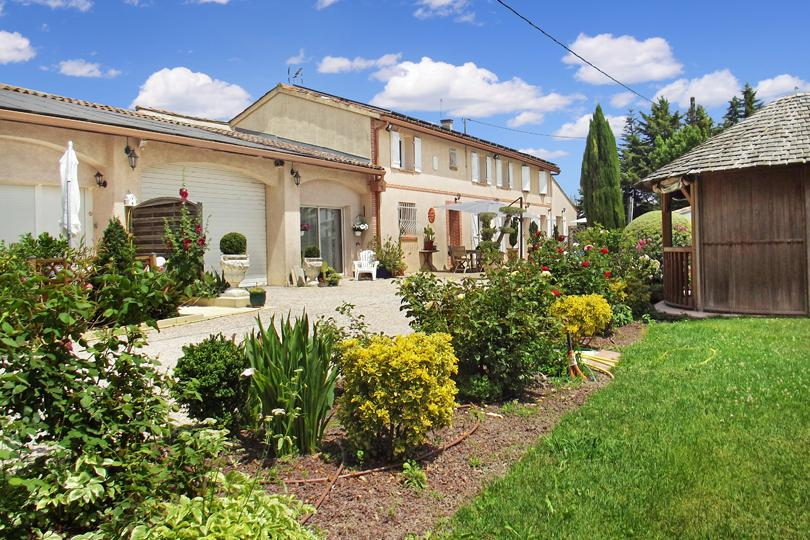

Accueil›Blog
Le blog du domaine
Idées de séjours, sorties et conseils autour du Domaine des Six, dans le Sud-Toulousain.
Tous les articles du blog
Se marier près de Toulouse : réussir sa réception dans le Sud-Toulousain
Choisir le bon lieu, anticiper l'hébergement des invités et profiter d'un cadre nature à 20 minutes de Toulouse.
Organiser un séminaire d'entreprise près de Toulouse dans un cadre nature
Travailler au vert et loger toute l'équipe sur place, à 20 minutes de Toulouse.
Organiser une retraite yoga ou bien-être près de Toulouse
Un lieu calme à privatiser pour vos stages de yoga, méditation ou bien-être.
Week-end nature avec piscine près de Toulouse
S'évader dans le Sud-Toulousain le temps d'un week-end, piscine et grand parc.
Mariage en petit comité près de Toulouse
Micro-mariage, cérémonie intime ou élopement : célébrer l'essentiel entourés de vos proches.
Anniversaire & fête de famille près de Toulouse
Réunir ses proches le temps d'un week-end et loger tout le monde sur place.
Mariage champêtre près de Toulouse
Oliviers, parc arboré et cérémonie en plein air : le décor naturel idéal pour un mariage champêtre.
EVJF & EVG près de Toulouse
Un domaine privatisé avec piscine et hébergement pour un week-end entre amis.
Que faire autour de Lherm ? Idées de sorties dans le Sud-Toulousain
Nos idées de visites et d'activités autour du Domaine des Six : Toulouse, Muret, la Garonne et les Pyrénées.
Ouverture mi-janvier 2027
Réservez votre séjour
Dites-nous vos dates : nous vous répondons personnellement.
Demander mes datesTéléphone 06 98 20 02 08 · francois.leterrier.cmw@gmail.com